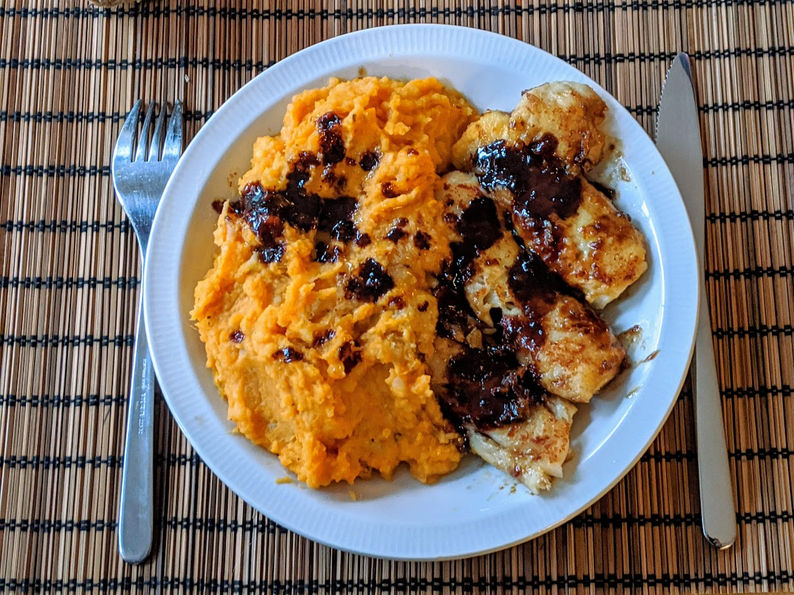

..@..♦.D.

|
Présentation 
|
Blog
|
Recettes
|

Ici avec de la [purée de patates douces](PureeDePatatesDoucesGratinee.html)
Pour quatre personnes :
Remarque : si les pavés de cabillaud sont surgelés et qu'on a pas pensé à les faire décongeler au frigo la veille, les mettre à l'extérieur un quart d'heure avant de commencer la recette, et augmenter le temps de cuisson de 10-15 minutes. Il faut au moins que leur extérieur soit un peu mou pour que la farine tienne.